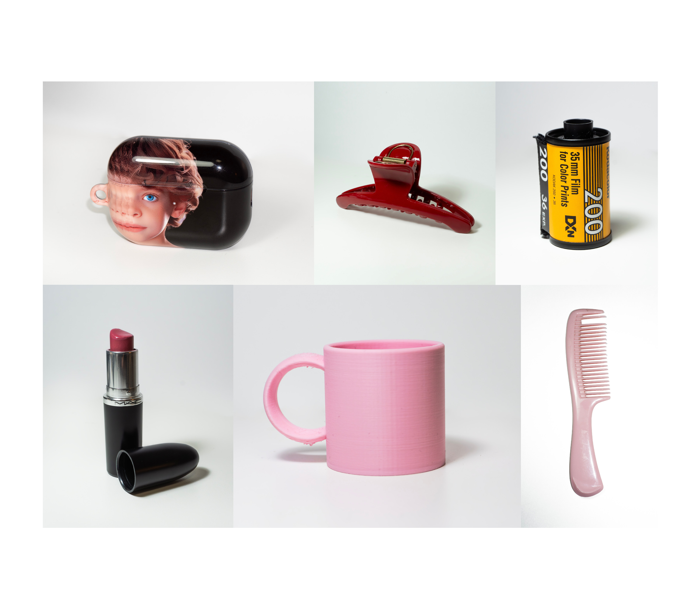
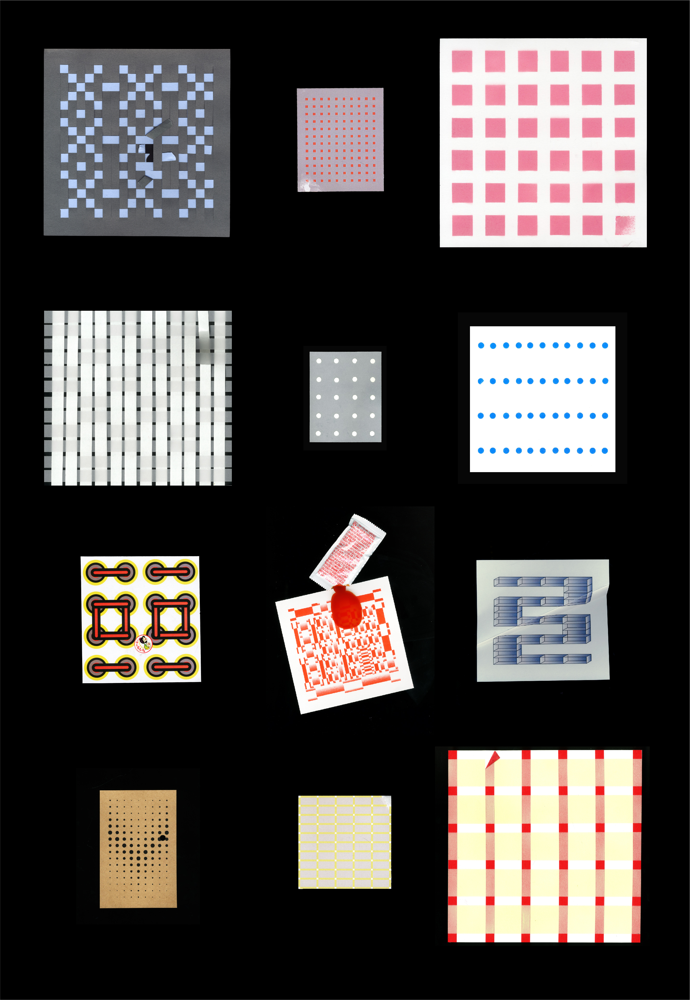
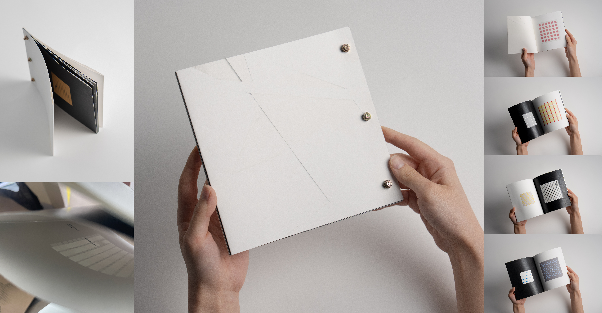
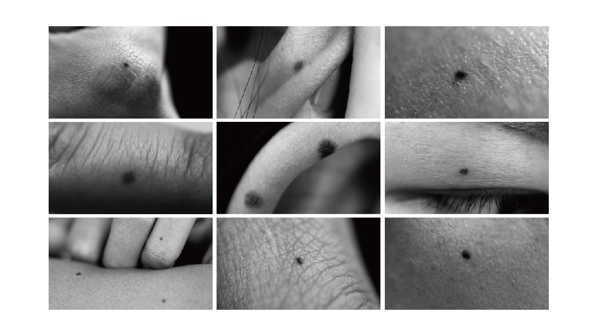
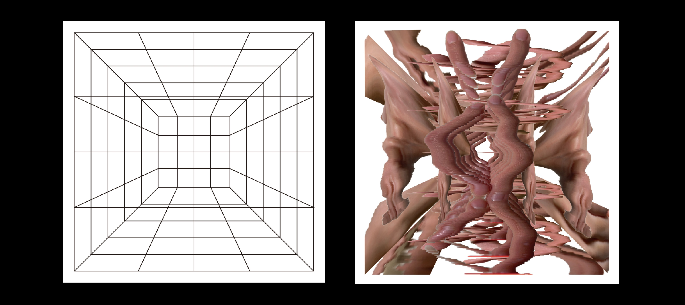
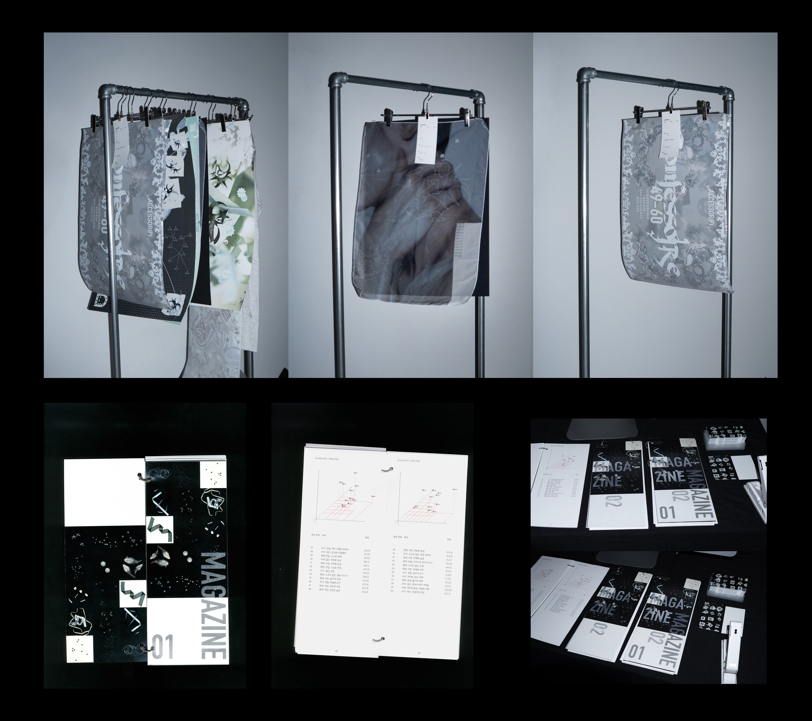
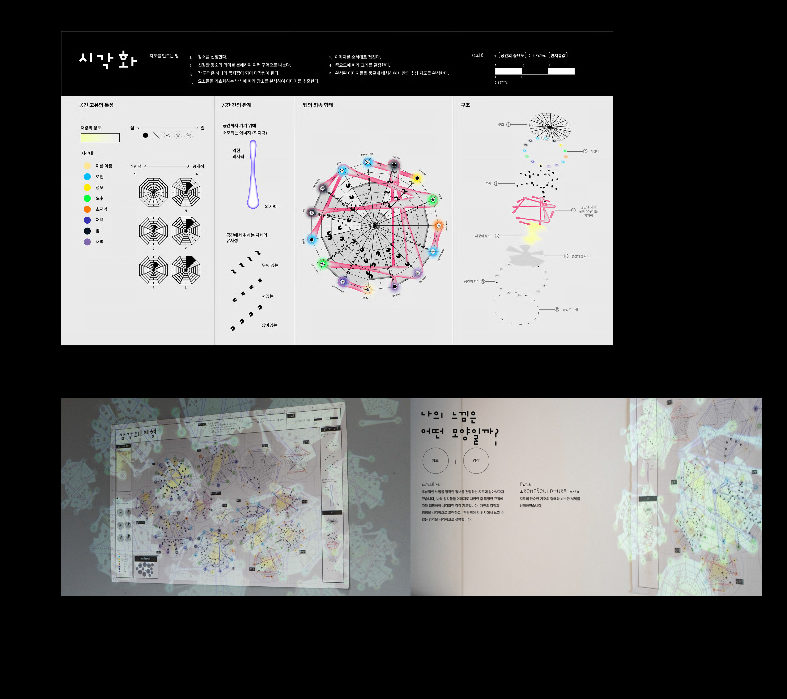

mixmatㅊh
2026 · 개인작업 · 진행중
낱말카드는 본래 정해진 관념을 정확히 전달하고 학습시키는 도구이지만, 이 프로젝트는 그 관계의 약속을 의도적으로 비틀어 이미지와 텍스트 사이에 어긋남을 만든다. 이질적으로 짝지어진 둘은 서로를 설명하기를 멈추고, 보는 이에게 익숙한 학습의 규칙을 다시 들여다보게 한다.

낱말카드는 본래 정해진 관념을 정확히 전달하고 학습시키는 도구이지만, 이 프로젝트는 그 관계의 약속을 의도적으로 비틀어 이미지와 텍스트 사이에 어긋남을 만든다. 이질적으로 짝지어진 둘은 서로를 설명하기를 멈추고, 보는 이에게 익숙한 학습의 규칙을 다시 들여다보게 한다.


부재 또는 개입을 통해 망가진 수작업 패턴과 그 내용을 담은 소책자
아방가르드 고딕 서체를 활용한 타이포그래피 웹

점(.)찍기

구조 위에 스킨 입히기

Accessor(P)에서 ‘accessor’는 라틴어 confessor(고해자)에서 파생된 단어로, ‘자신의 내밀한 죄나 비밀을 고백하는 사람’이라는 의미에서 착안했다. 가톨릭 사제가 타인의 고해를 듣고 죄를 사하는 의례처럼, ‘accessor’는 타인의 숨겨진 감정과 비밀을 받아들이고 그것을 새로운 형태로 전환하는 상징적 존재로 기능한다. 본 전시에서의 ‘고해’는 더 이상 종교적 속죄의 행위가 아니라, 스스로를 드러내고 새롭게 장식하는 하나의 미학적 실천이다. 감춰졌던 개인의 상처와 욕망 등은 ‘ 액세서리(accessory)’라는 이름 아래 시각적 오브제로 재탄생하며, 일련의 방법론을 통해 새로운 서사를 획득한다. 액세서리는 자신을 꾸미고 돋보이게 하기 위한 장식으로 인식된다. 본 전시는 이러한 통념을 의도적으로 전복한다. ‘accessor’는 장식을 매개로 감정을 드러내고 내면의 페르소나(Persona, P) 를 외부로 확장하는 주체로 설정된다. 팀원들은 각자의 ‘accessor’로서 서로의 비밀을 나누고, 그 감정을 시각적 언어로 변환하는 과정을 함께 실험한다. 우리가 평소 숨기고 살아가는 것들, 쉽게 표현하지 못해 마음속 깊이 묻어두었던 감정들과 같이 내밀한 비밀들이 이번 전시에서 새로운 시선으로 해석되어 미학적 힘을 지닌 또 다른 형태의 액세서리로 다시 태어난다. 타인에게 감춰왔던 내면의 페르소나와 상처를 드러내고 이를 공개념화하는 과정을 통해, 개인의 비밀은 더 이상 은폐된 상흔이 아닌 상징적 의미와 힘을 지닌 오브제로 변모한다. 이러한 과정을 거치며 개인의 취약성은 공유 가능한 서사로 전환되고, 전시 속에서 재탄생하고 다층적인 의미를 생성한다.

추상적인 감각과 감정을 지도라는 정보 전달 매체에 담은 작업. 작가가 일상적으로 머무는 공간들에서 경험한 감각을 이미지로 변환하고, 일정한 규칙에 따라 배치하여 시각화한다. 지도가 지형과 위치 정보를 객관적으로 전달하듯, 이 작업은 지극히 주관적인 내면의 감각을 하나의 지형처럼 펼쳐낸다. 관람객은 각 위치를 탐색하며 작가가 감각한 공간의 결을 시각적으로 읽어낼 수 있다.